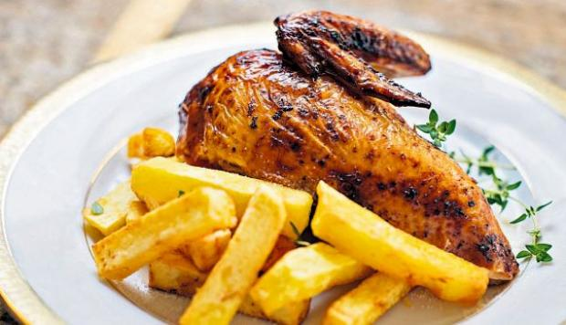
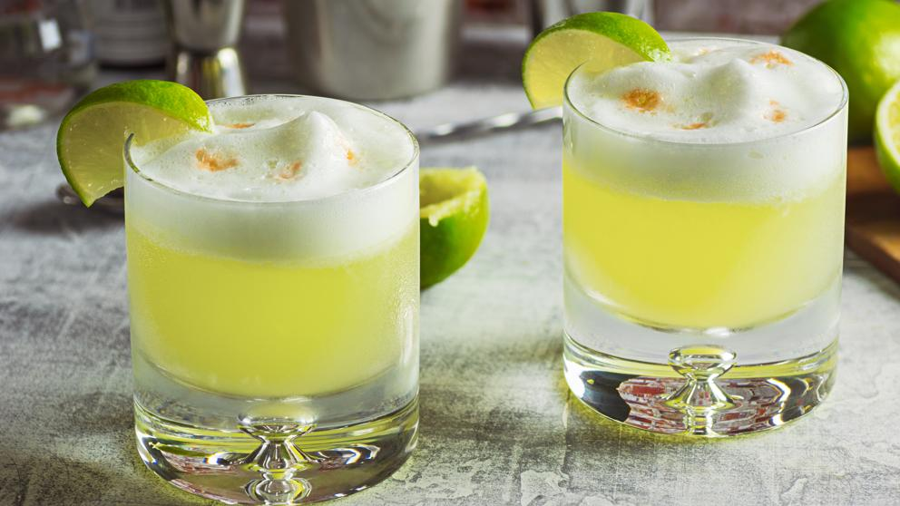

Pollo a la Brasa Sabroso
Especialistas de Sazón Lopesa señalaron ayer que el comino y la pimienta son elementos primordiales para que nuestro pollo a la brasa siga siendo el preferido de las mesas peruanas. Aquí nos ofrecieron su receta: Se requiere un pollo grande entero (sin vísceras), ¼ taza de cerveza negra, 1 cucharada de vinagre blanco, 1 de sillao, 1/2 de romero (seco), 1/2 de orégano, 1 de ají panca (molido), 1 de ajo (molido), 1/2 de comino, 1/2 de pimienta y 1 de sal. En un recipiente grande se pone la cerveza, el vinagre, el ajo, el comino, la sal, la pimienta y unas gotitas de sillao; se untar el pollo con esta mezcla por dentro y por fuera. En otro recipiente mezclar el romero con el orégano e introducir una pequeña cantidad en la cavidad del pollo; el resto untarlo bien en la parte externa. Finalmente, frotarlo bien con el ají colorado y dejar macerar por 2 horas. Se hornea a190º C. durante 1 hora.
Jessica.
Riquísimos anticuchos!!! Totalmente recomendable, es pequeño y pero la atención es rápida. Fui con amigos y todos salimos satisfechos.Andrea.
De recomendar el lugar, si lo haría, porque es bien rico, pero deben mejorar la cantidad de la porción.Rafael.
Muy buenos platos muy buen pollo a la brasa, buena chicha morada, buenos picarones, muy buena atencion, local amplio y comodo.El Pisco Sour
El pisco sour es un cóctel preparado con pisco y zumo de limón. La denominación proviene de la unión de las palabras (un tipo de aguardiente de uvas) y (en referencia a la familia de cócteles que utilizan limón como parte de su receta). Está incluido en las gastronomías de Perú y Chile, preparado con una receta diferente respectivamente, y con algunas variaciones en el resto de sus ingredientes básicos. Chile y Perú debaten que el pisco sour es su cóctel nacional o típico, y cada uno afirma la propiedad exclusiva.12 Sobre el origen de este cóctel existe una controversia entre los expertos. Investigadores peruanos consideran únicamente un origen en el Perú, mientras que la opinión chilena está dividida, algunos consideran que es originario de Chile, a su vez, otros consideran que fue creado en el Perú.1 En 2004 el gobierno peruano creó un día festivo anual en honor del pisco sour, el primer sábado de febrero,3 desde entonces se celebra todos los años, y en 2007 declaró al pisco sour como patrimonio cultural de la nación.4 Las primeras referencias documentales a la expresión y la preparación de este cóctel han sido encontradas en el Perú, en dos artículos publicados en las revistas limeñas Hogar, de septiembre de 1920,5 y en Mundial, de 1921.6 A ellas se suma un anuncio publicitario publicado en Chile, en el semanario The South Pacific Mail de Valparaíso, en julio de 1924, por el cual se promociona el Bar Morris ubicado en la capital peruana, Lima.7 Las más antiguas referencias al uso del término en Chile se encuentran en el referido anuncio publicitario del The South Pacific Mail de 1924, y en la novela La chica del Crillón del escritor chileno Joaquín Edwards Bello, de 1934.8 Asimismo, se halló en un comentario en el registro del Bar Morris de Lima, de 10 de junio de 1927, una mención genérica a la eventual preparación de este cóctel en Chile5 y, además, en un reportaje publicado en el periódico Los Angeles Times, de 27 de noviembre de 1928, se indica su preparación en Santiago de Chile.
Erik willian.
PISCO SOUR BUENO excelente pisco sour, de gran tamaño, buen precio, con una atencion inmejorable. Un lugar que se tiene que conocer los visitantes del mundo.